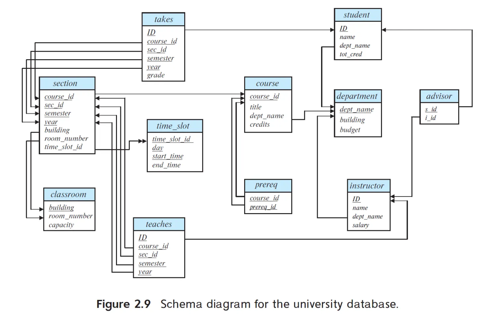
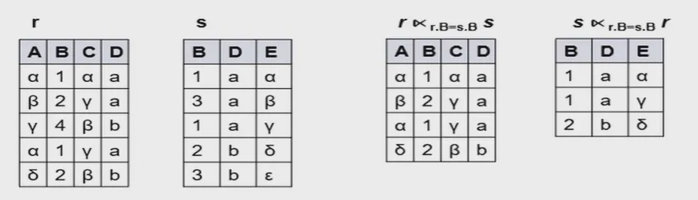

Chapter 2 关系模型 The Relational Model¶
Tip
本章包含部分（老版书） Chapter 6.1: Relational Algebra 的内容。
2.1 基础结构 Basic Structure¶
关系 Relation¶
关系 relation- 一个关系就是一个 n元组的无序集合 | Formally, given sets \(D_1,D_2,...,D_n\) a relation \(r\) is a subset of \(D_1\times D_2\times ...\times D_n\)(笛卡尔积). Thus, a relation is a set of n-tuples \((a_1, a_2, ..., a_n)\) where each \(a_i\in D_i\).
关系模式 Relation Schema 和 关系实例 Relation Instance¶
关系模式 relation schema-
\(R = (A_1, A_2, ..., A_n)\) is a relation schema.
定义了这一类关系的结构，即由哪些属性构成，这些属性来自什么域。
Example
\(Instructor\_schema = (ID, name, dept\_name, salary)\)
属性 attribute- \(A_1, A_2, ..., A_n\) are attributes.
关系实例 relation instance- A relation instance \(r\) defined over schema \(R\) is denoted by \(r(R)\).
Example
\(instructor(Instructor\_schema) = instructor(ID, name, dept\_name, salary)\)
表 table- 一个关系实例就是一张二维表 | The current values(relation instance) of a relation are specified by a table.
元组 tuple- An element \(t\) of relation \(r\) is called a tuple and is represented by a row in a table.
Note
数学表达上，笛卡尔积的结果是有序对，并且tuple的定义就是a sequence/list of values. 但我们在讨论关系模型时，一般认为属性在理论概念上依然是无序的，即属性的顺序不影响我们对关系的表达。
- 多个relation schema/relation instance合在一起，就是database schema/database instance.
属性 Attribute¶
域 domain- The set of allowed values for each attribute is called the domain of the attribute.
空值 null- 一个特殊值，属于任何域。（详情见下章相关内容）
关系理论第一范式 1st NF¶
属性值是原子性的(atomic), 即每一属性的值都不可分割，同一属性中不能有多个值。
键 Key¶
数据库中的键由一个或多个属性组成。
主键 Primary Key¶
假设 \(K\in R\).（二者都是属性的集合）
- 如果 \(K\) 的值能唯一确定任意关系 \(r(R)\) 中的一个元组，则称 \(K\) 是一个 \(R\) 的超键(superkey).
- 包含元素个数最少的超键 \(K\) 称为候选键(candidate key).
- 将候选键之一选为主键(primary key).
Example
- \(K_1 = \{ID\}\) 和 \(K_2 = \{ID, name\}\) 都是表 \(instructor\) 的超键。
- \(\{ID\}\) 是表 \(instructor\) 的一个候选键。
外键 Foreign Key¶
从关系 \(r_1\) 的属性 \(A\) 到关系 \(r_2\) 的主键 \(B\) 的一个外键约束(foreign key constraint) 限制了所有 \(r_1\) 中的元组的 \(A\) 属性值必须也是 \(r_2\) 中某元组的 \(B\) 属性值。（Attribute set A is called a foreign key from \(r_1\), referencing \(r_2\).） \(r_1\) 称为参照关系(referencing relation), \(r_2\) 称为被参照关系(referenced relation).
- 其中
76766是异常值
参照（引用）完整性约束(referential integrity constraint) 的定义和外键约束类似，唯一的区别是不要求属性 \(B\) 是关系 \(r_2\) 的主键。
- 外键约束是参照完整性约束的一种特殊情况。
Note
定义foreign key有助于数据库维护。
模式图 Schema Diagram¶

- 下划线表示主键
- 单箭头表示外键
- 双箭头表示引用完整性
2.2 关系查询语言 Relational Query Languages¶
Tip
本章节我们只讨论其中的关系代数 (relational algebra) 部分。
基本关系代数操作 Fundamental Relational Algebra Operations¶
关系的操作，本质上就是集合的操作。
六个基本操作：
横向选择若干项，下标为选择条件（表示属性特征的一个表达式）。
- 使用逻辑运算符 \(\land\), \(\lor\), \(\lnot\).
投影，纵向选择。
- 注意去重，因为集合不可重。
集合并。
- 注意参与运算的两个表的属性和对应的值域都要相同。
集合减。
- 注意参与运算的两个表的属性和对应的值域都要相同。
笛卡尔积。
- 如果参与运算的两个表有同名属性，则需对其重命名。

重命名。
\(\rho_X(E)\) 将 \(E\) 重命名为 \(X\) 并返回。
\(\rho_{X(A_1, A_2, ..., A_n)}(E)\) 将 \(E\) 及其属性都重命名为 \(X(A_1, A_2, ..., A_n)\) 并返回。
Example
参考：

Find the names of all instructors in the Physics department, along with the course_id of all courses they have taught.
- Query 1:
- Query 2
Note
显然Query 2更快——优化时尽量将select操作往里放。（当然为了方便和清晰，将关系代数表达式写成Query 1这样也没啥问题）
Find the names of all instructors in the Physics department, along with the course_id and title of all courses they have taught.
在example 1的基础上再乘一个 \(course\) 表即可。
Find the largest salary in the university.
选出所有 \(salary\) 小于某别的 \(salary\) 的行（即不是最大的行），再用全集减去这些行。
附加操作 Additional Relational Algebra Operations¶
没有增强关系代数的表达能力（即它们可以用六个基本操作组合得到），但用起来更方便。
集合交。
- 注意参与运算的两个表的属性和对应的值域都要相同。
基本操作表示集合交
自然连接。保留两者公共属性的值都相同的行，拼在一起。
- 扩展 - theta join:
- 扩展 - semijoin \(r\ltimes_\theta s\): 保留r中能和s连接的行，即后者只起到一个类似select的作用。

基本操作表示自然连接
假设 \(R = (A, B, C, D),\ S = (E, B, D)\).
则自然连接后 \(\text{result schema} = (A, B, C, D, E)\).
有
外连接。保留两者公共属性相同的行，且：
- left outer join保留前者所有行；
- right outer join保留后者所有行；
- full outer join保留两者所有行。
没有的属性值用null填充。
基本操作表示外连接
-
\[\large{r ⟕ s = (r\Join s)\cup(r - \Pi_R(r\Join s))\times\{(null, ..., null)\}}\]
-
\[\large{r ⟖ s = (r\Join s)\cup\{(null, ..., null)\}\times(s - \Pi_S(r\Join s))}\]
-
\[\large{r ⟗ s = (r\Join s)\cup(r - \Pi_R(r\Join s))\times\{(null, ..., null)\}\cup\{(null, ..., null)\}\times(s - \Pi_S(r\Join s))}\]
除法。
对关系 \(r(R)\) 和 \(s(S)\) 满足 \(S\subset R\), \(r\div s\) 的值为最大的关系 \(t(R - S)\) 满足 \(t\times s\subseteq r\). 即 \(t\) 需满足和 \(s\) 的所有组合都出现在 \(r\) 中。
Note
除法适用于表述中包含“所有”("for all") 的查询。
比如假设 \(r(ID,\ course\_id) = \Pi_{ID,\ course\_id}(tekes)\),
\(s(course\_id) = \Pi_{course\_id}(\sigma_{dept\_name = "Biology"}(course))\),
那么 \(r\div s\) 就表示选了所有生物学院开的课的学生。
基本操作表示除法
\(temp1\) 是 \(t\) 的所有可能取值，也就是上面例子中选过课的所有学生 \(ID\), 将它与 \(s\) 相乘就得到全部组合，拿它去减 \(r\), 如果能把某个 \(t\) 中的属性减光，表明 \(r\) 中存在它和 \(s\) 的所有组合。于是剩下的都是不满足条件的，拿 \(temp1\) 减掉就得到答案。
- \(\Pi_{R - S, S}(r)\) 只重排了 \(r\) 的属性顺序。
赋值。
Example
参考：
Find all customers who have an account from at least the "Downtown" and the "Uptown" branches.
- Query 1:
- Query 2:
Find all customers who have an account at all branches located in Brooklyn city.
*操作符优先级¶
- project
- select
- cartesian product
- join, division
- intersection
- union, difference
扩展操作 Extended Relational Algebra Operations¶
普通关系代数无法表达的操作。
广义投影 Generalized Projection¶
允许在projection时进行算术运算。
其中 \(F_i\) 是 关系代数表达式 \(E\) 中的属性或者是属性的算术表达式。
Example
\(\large{\Pi_{ID, name, dept\_name, salary/12}(instructor)}\)
聚合函数 Aggregate Functions¶
其中 \(G_i\) 是用于分组（求聚合函数值）的属性表（可以为空），\(F_i\) 是聚合函数（\(A_i\) 是属性名），\(E\) 是关系代数表达式。
常见聚合函数： \(avg,\ min,\ max,\ sum,\ count\).
Note
聚合函数的结果没有名字，所以一般需要重命名。方便起见，重命名可以作为聚合函数操作的一部分：
修改操作 Modification of the Database¶
修改操作用赋值操作符表示。
- 插入 insertion: \(r\gets r\cup E\)
- 删除 deletion: \(r\gets r - E\)
- 更新 update: \(r\gets\Pi_{F_1, F_2, ..., F_n}(r)\)
其中 \(E\) 是关系代数表达式。
多重集上的关系代数 Multiset Relational Algebra¶
- selection: 保留重复的行。
- projection: 同样保留重复的行。
- cross(cartesian) product: 如果 \(r\) 中有 \(m\) 个重复的行 \(t1\), \(s\) 中有 \(n\) 个重复的行 \(t2\), 则结果中有 \(m\times n\) 个重复的行 \(t1\times t2\).
- 其它操作同理，如union保留 \(m+n\) 份，intersection保留 \(min(m, n)\) 份，difference保留 \(min(0,\ m-n)\) 份。